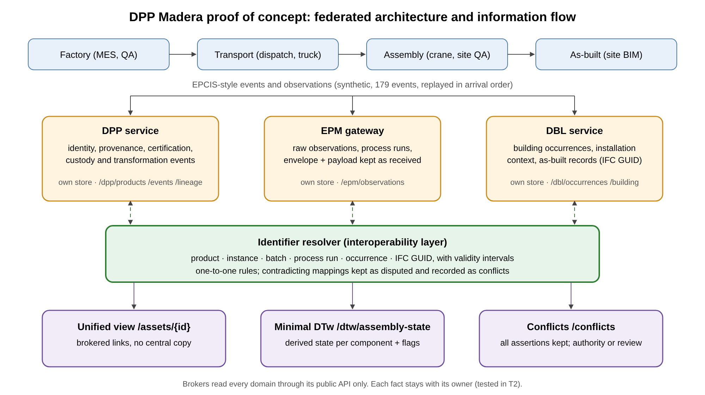
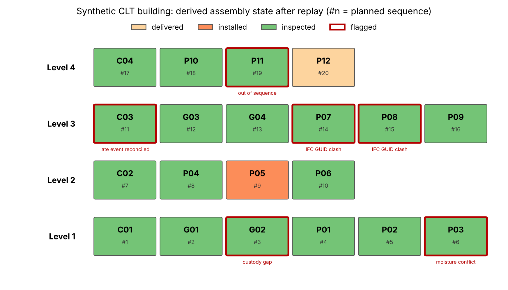

A small working system with one service for each record (passport, site observations, building logbook) and a simple assembly twin that reads from them. We fed it the full history of an invented building, including five problems planted on purpose, and checked that it kept every part's story straight.

| # | What we checked | In plain words | Result |
|---|---|---|---|
| T1 | Identity resolution | Scan any of a part's codes and you reach all the others. | pass |
| T2 | No duplication | Each fact lives in one place; the others only point to it. | pass |
| T3 | Complete history | Every part's story runs from factory to building without gaps, or the gap is flagged. | pass |
| T4 | Missing hand-over | A part that reached site with no shipping record (planted fault) is caught. | pass |
| T5 | Conflicting readings | Two moisture readings that disagree (11.8% and 18.5%) are both kept, with who and when, and sent for review. | pass |
| T6 | Late records | An inspection recorded 48 hours late still lands in the right order. | pass |
| T7 | Design model clash | Two parts claiming the same element of the design model are caught. | pass |
| T8 | Assembly picture | The twin shows the right state for all 20 parts and flags the one installed out of order. | pass |
| T9 | One view per part | One request returns links to all four records for any part. | pass |
| T10 | Needs coverage | Each of 14 information needs from the literature is either served or honestly marked "not covered yet". | pass |
| T11 | Repeatable | A clean copy and one command reproduce every result. | pass |

Five example questions from site and factory staff. With the linked records each one is a single request. The manual look-up counts are our estimate of what it takes today to find the same answer across separate files.
| Question | Answer | Requests | Manual look-ups (estimate) |
|---|---|---|---|
| Which level 2 panels are installed but not inspected? | P05 | 1 | 9 |
| Where is the model element of P06, and is its chain of custody complete? | Found on level 2, inspected, custody complete | 1 | 4 |
| Which parts reached site without a complete chain of custody? | G02 | 1 | 40 |
| Which moisture readings disagree, and who reported them? | 11.8% and 18.5% on one panel, sent for review | 1 | 40 |
| Which parts were installed out of the planned order? | P11 | 1 | 40 |
The project enters at technology readiness level (TRL) 2. This proof of concept is strong evidence for that level and the first step towards TRL 3, planned for month 6 with real data from partner companies. TRL 4 is planned for month 11 and TRL 5 at the end of the project.
The PoC code and the full test report are available to reviewers and partners on request.